algorithmes de parcours d'un graphe
- cours sur les graphes. Term NSI
- algorithmes de parcours des graphes
- TP 1 sur l’implementation en python des graphes
- TP 2 sur la coloration d’un graphe
- TP sur les algorithmes de parcours des graphes (app en ligne)
- algorithme de Dijkstra
- Protocoles de routage
Parcourir un graphe
Principe
Le parcours d’un graphe va donner une liste d’arcs ou de sommets visités, dans un certain ordre.
Cet ordre va dépendre de l’algorithme employé: Pour des parcours de type largeur ou profondeur, on suppose que l’on peut revenir sur ses pas. La liste de sommets ne représente pas un chemin.
On appelera chemin une suite continue de sommets (ou d’arcs) consécutifs dans le graphe, sans retour en arrière, c’est à dire sans revenir vers un sommet déjà visité.
Parcours d’un graphe en largeur BFS
- Principe: BFS (Breadth-First Search): Il s’agit d’une exploration du graphe G, de proche en proche, en explorant tous les chemins, depuis la distance de longueur 1 du sommet, puis la distance 2, …
- Algorithme : voir définition en bas de page1
- Graphe : voir définitions à la page Graphes
Voici le programme python de parcours en largeur d’un graphe:
- Programme de type itératif:
Parcours d’un graphe non pondéré
Soit G(V,E) un graphe de sommets V = {A,B,C,D,E,F,G,H,I,J} et d’arêtes E.
On note la distance entre 2 sommets quelconques u et v dans le graphe G :
$$dist_G(u,v)$$Pour le graphe exemple suivant (Graphe 1), la distance du sommet A au sommet J, vaut au minimum 4 (chemin A, B, E, I, J). Mais cela depend du chemin. Ainsi :
$$dist_G(A,J)=4$$.
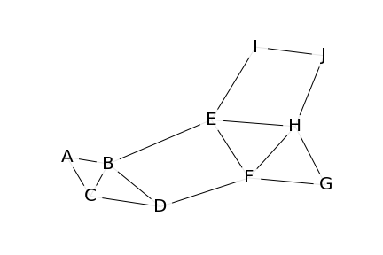
Graphe 1 : exemple
Calculons toutes les distances dans ce graphe : L’algorithme de parcours en largeur (Breadth-First Search BFS)
Principe : Pour déterminer la longueur de tous les chemins du graphe, il va falloir le parcourir. Lors du parcours, certains sommets seront colorés, pour nous rappeler qu’ils ont été parcouru (rouge), ou en cours de parcours (vert).
On aura besoin de conserver une liste L des sommets à explorer.
On commence l’exploration en partant d’un sommet r. Voici la méthode :
- Colorer en VERT le sommet
rpour se rappeler qu’il a déjà été partiellement traité. - Parcourir le graphe depuis
rjusqu’à l’un de ses voisinsu, non coloré en vert ou rouge. Coloreruen VERT. - Noter la distance du sommet de départ
rvers le sommetuen cours d’exploration : distG(r,u) = 1 si le sommet voisinuest adjacent. - Ajouter le nom du sommet
uà droite dans la listeL:L = [r,u] - Si
ra d’autres sommets adjacents, revenir au point 2 et explorer un autre de ces sommets (points 2, 3, 4). - Si
rn’a plus de sommet adjacent non visité, colorerren rouge. Retirerrde la liste (premier sommet, à gauche dans la liste L).Layant une structure de FILE, on dit que l’on défiler.
On poursuit ensuite l’exploration à partir du nouveau premier sommet v adjacent de u. La distance de r à v est alors : distG(r,v) = distG(r,u) + 1 (point 3).
Lorsque la liste L est vide, l’exploration est terminée et toutes les distances entre r et les autres sommets est connue.
Exemple :
A partir du graphe 1 défini plus haut, on démarre l’exploration à partir du sommet r = E.
Celui ci est coloré en VERT.
La méthode vue plus haut permet de rapidement établir la liste L = [E,B,F,H,I] à partir des sommets adjacents à E. Les sommets B,F,H,I sont à une distance 1 du sommet E. On a par exemple distG(E,B) = 1. Ces sommets sont colorés en VERT.
Une fois cette première partie de l’exploration terminée, on retire E de la liste L, et on colore le sommet en rouge.
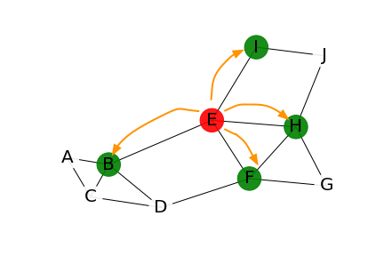
L = [B,F,H,I]
E pour chacun des sommets visités, le symbole ∞ pour ceux qui ne l’ont pas encore été:
| exploration depuis le sommet… | A | B | C | D | F | G | H | I | J |
|---|---|---|---|---|---|---|---|---|---|
| E | ∞ | 1 | ∞ | ∞ | 1 | ∞ | 1 | 1 | ∞ |
On se déplace maintenant sur le sommet B, qui est le premier de la liste.
L’exploration de ses sommets adjacents continue, à conditions que ceux-ci soient blancs, sinon, on passe à un autre sommet. Ici, on fait l’exploration des sommets A,C,D. Ceux-ci sont colorés en VERT, et ajoutés à la liste L:
$$L = [F,H,I,A,C,D]$$Les distances de E à chacun de ces nouveaux noeuds sont enregistrées :
distG(E,A) = 2, tout comme distG(E,C) et distG(E,D). Le tableau suivant donne les distances depuis le sommet E:
| exploration depuis le sommet… | A | B | C | D | F | G | H | I | J |
|---|---|---|---|---|---|---|---|---|---|
| B | 2 | 2 | 2 | ∞ | ∞ |
Les distances déjà connues ne sont pas modifiées. On laisse un blanc dans le tableau.
On colore ensuite le sommet B en rouge et on le retire de la liste L.
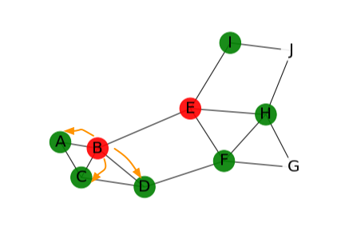
L = [F,H,I,A,C,D]
On a alors distG(E,G) = 2, puis le sommet F est mis en rouge et retiré de la liste:
$$L = [H,I,A,C,D,G]$$| exploration depuis le sommet… | A | B | C | D | F | G | H | I | J |
|---|---|---|---|---|---|---|---|---|---|
| F | 2 | ∞ |
On poursuivra l’exploration par le sommet H, suivant dans la liste. Ce qui permettra de définir le dernier chemin jusqu’à J, et noter distG(E,J) = 2:
| exploration depuis le sommet… | A | B | C | D | F | G | H | I | J |
|---|---|---|---|---|---|---|---|---|---|
| H | 2 |
A la fin du traitement, on peut représenter à l’aide d’un arbre tous les chemins issus de l’exploration du graphe :
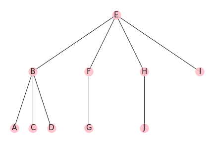
arbre du parcours BFS
Pour réaliser cet arbre, il y aura 2 méthodes:
- Soit la construction d’un tableau des sommets visités au fur et à mesure de l’exploration (vu plus haut)
- Soit remonter chaque étape du parcours du graphe le parent du sommet visité. (voir fiche d’exercices). Ainsi, il aura faudra se rappeler que le sommet D a pour parent le noeud B (D est marqué dans le tableau dont l’entrée est B). Et le sommet B a lui même pour parent le sommet E. Ainsi, en remontant le chemin, on sait que le chemin de E à D passe par B : E => B => D.
Pour aller plus loin (term NSI)
-
Consulter la page du parcours en largeur sur wikipedia
-
Algorithme de Dijkstra (plus court chemin dans un graphe pondéré)
-
Application de l’algorithme BFS au parcours dans un labyrinthe:
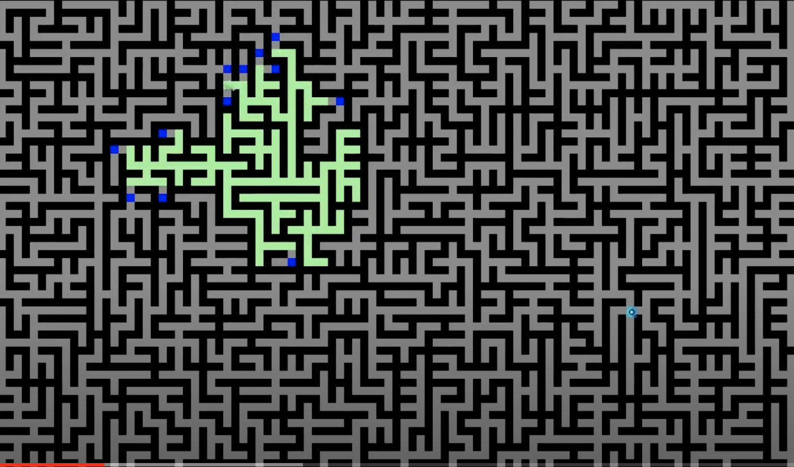
video: Maze Pathfinder - Breadth First Search (BFS)
Parcours d’un graphe en profondeur (DFS)
Principe: L’exploration DFS (Depth-First Search) retourne une liste de sommets, parcourus en plongeant dans la profondeur du graphe. Le prochain sommet visité est un des successeurs du sommet courant, avec un retour en arrière lorsque’il n’y a pas de nouveau successeur, ou bien lorsque celui-ci a deja été visité.
Voici les 2 programmes python de parcours en profondeur d’un graphe:
- récursif:
- Itératif:
Principe
Soit un graphe G = (V,E) et r un sommet de G, point de départ de l’exploration. Le parcours en profondeur du graphe va permettre de visiter tous les noeuds du graphe, mais selon un chemin où l’on plonge dans la profondeur du graphe. Le prochain sommet visité sera un sommet fils non encore visité.
A chaque étape, c’est à dire à chaque arête suivie, il faudra mémoriser le parent du nouveau sommet visité. (une fois celui-ci placé dans la liste des sommets parcourus, pas découverts). Cela permettra de revenir en arrière. On utilisera pour cela une structure de PILE. On reviendra en arrière en dépilant le dernier sommet de la liste.
Lorsque le chemin mène à une impasse, (il n’y a plus de sommet fils non visité), lorsque l’on est sur un bord du graphe, alors on remonte d’un niveau, vers un sommet parent, avant de poursuivre l’exploration.
En pratique :
- tous les sommets ont d’abord colorés en BLANC.
- On colore chaque noeud u visité en VERT.
- Lorsque tous les noeuds fils de u sont visités, on colore celui-ci en ROUGE.
Illustration : Avec le graphe suivant, on démarre l’exploration du noeud G :
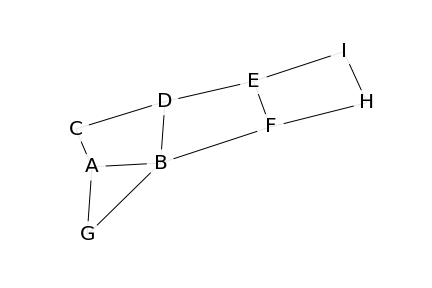
exemple de graphe pour le parcours en profondeur
Supposons que l’on commence l’exploration par B (on aurait tout aussi bien choisir le A). On colore alors B en VERT.
On poursuit l’exploration par les sommets suivants : D,C,A (il y a d’autres possibiltés) :
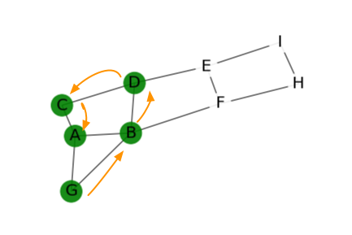
étape 1
On peut alors poursuivre l’exploration vers E :
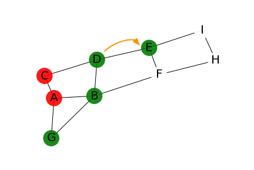
étape 2
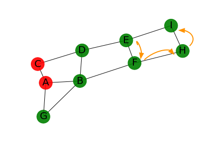
étape 3
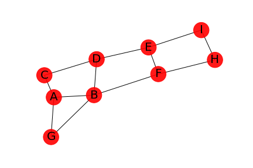
fin du parcours
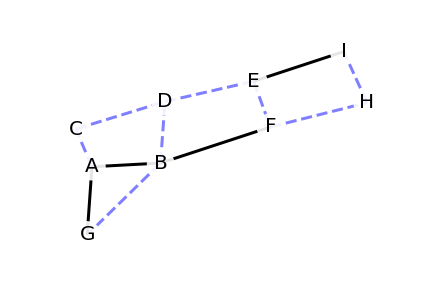
arbre couvrant
Applications
Le parcours d’un graphe en profondeur s’apparente à un algorithme de type retour sur trace, ou backtracking. C’est le comportement de joueur que l’on a lorsque l’on a droit à un nouvelle chance :
- Dans un jeu d’echec, lorsque l’on joue contre l’ordinateur, une option permet de revenir en arrière. On peut revenir un coup en arrière et prendre une meilleure option. L’ordinateur construit un graphe au fur et à mesure du jeu avec les coups joués ainsi que la configuration du jeu, afin de permettre ce backtracking.
- Lorsque l’on joue à un jeu de labyrinthe (illustration site zestedesavoir): Si on arrive dans une impasse, on adopte là aussi un algorithme de type retour sur trace. On revient jusqu’au noeud parent (le croisement précédent) afin d’explorer une nouvelle voie. Et si toutes ces voies sont sans issues, on remonte encore d’un niveau (le croisement précédent encore celui ci).
Parcourir un graphe pour trouver TOUS les chemins
Il s’agit d’une variante du parcours en profondeur.
Pour un graphe G, le problème s’énonce de la manière suivante:
Pour un sommet de départ A, créer un nouveau chemin pour chaque sommet adjacent à A de la manière suivante:
- Commencer le chemin avec la liste de sommets
[A] - Si le sommet adjacent est un nouveau sommet, n’appartenant pas déjà un
chemin.- ajouter le nouveau sommet adjacent au
chemin, par exemple[A,B] - ajouter ce
cheminà la liste des chemins - continuer avec cette même méthode depuis le sommet adjacent (appel recursif avec le sommet adjacent comme nouveau départ, et placer
cheminen paramètre)
- ajouter le nouveau sommet adjacent au
A la fin, retourner la liste des chemins.
Illustration:
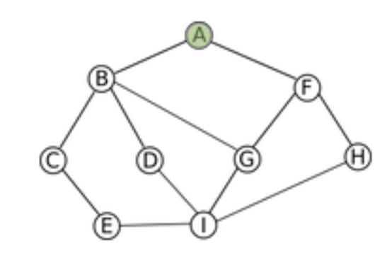
départ du sommet A
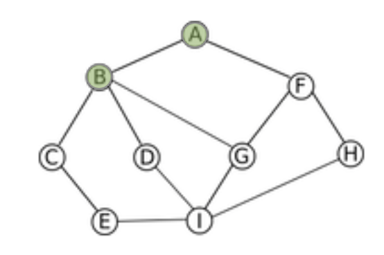
poursuite du chemin vers B
Script:
Graphe: implémentation à l’aide d’un dictionnaire de listes d’adjacence
Exemple:
Liens
- Animation sur le parcours d’un graphe http://mpechaud.fr/scripts/parcours/index.html
- Approfondir le sujet: les différents algorithmes de parcours des graphes (Term NSI): site pixees de David Roche
-
algorithmes : ce sont des méthodes qui, exécutées pas à pas, permettent d’obtenir un résultat final à partir de données de départ. ↩︎